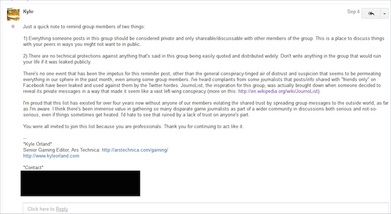

You guys need to read this article.
Fine Young Capitalist Interview.
Thread necro…
The shitstorm has become a full blown category 5 shitacane.
If you’re not caught up: https://knowyourmeme.com/memes/events/gamergate Read through this.
Numerous images. I know it’s a conservative site.
It’s insane how this is still going on. 5 weeks in internet time is like a century
Yeah. There’s some irony in that…
Here’s an interview with Zoe Quinn. Obviously not unbiased since it’s her telling it, but shows just how insane this whole thing is.
Yeah, even if the allegations are true, it doesn’t justify any of what’s happened.
Also, pretty sure none of the gaming journalists involved are getting even a fraction of the harassment Zoe Quinn is, even though the issue is supposedly over gaming journalism being corrupt.
Don’t get me wrong. I don’t condone harassment, but what’s to say she’s not lying about how much harassment she’s getting? I know that she’s at least receiving some flak for her own stupidity, but she’s been proven to be a pathological liar.
That said, I reiterate, I don’t condone harassment and death threats. Imo people need to take a step back and breathe. If the idiots in the Quinn camp didn’t overreact, this shit wouldn’t be happening. They continue to overreact and this shit still continues because of it.
On the plus side if she’s tired of the harassment why doesn’t she pull out like a normal person would?! Just shut the fuck up and not talk for a while till the heat dies down. Don’t get on twitter, etc. It boggles my mind, I know these people aren’t logical, but if you’re smart, you’d have pulled by now if you’re as tired of the harassment as you think they would be by this point.

https://twitter.com/OriginalSprax/status/511085307199254528/photo/1
https://twitter.com/hashtag/gamergate
https://twitter.com/hashtag/NotYourShield?src=hash
{kind=link}
That’s over a week old. Steve came out of his box. He’s lost everything in the last month despite at least trying to be the voice of reason and being objective, but got shot in the foot instead. I feel bad for the guy, shouldn’t’ve had to resign from his job to retain his own integrity, but at the very least I’m glad he can feel validated about his concerns now.
I watched a live stream (will be up again sometime tomorrow) - (his twitter if you want to watch the next one - he was forced to sign up for one to communicate with people, he doesn’t like social media) earlier today with Adam Baldwin and Milo (the author of the article I posted previously) - apparently Milo is about to drop another nuke on the anti-gg camp some time today or tomorrow, depending on your timezone.
On another note, it’s hilarious that none of the anti-gg people won’t come out of their playground to attempt to act like adults and tell their side of the story. There was one on the live stream I watched (well listened to) but I never heard of her prior to that and she wasn’t fast enough with the moderator (pol) as he needed to cut it and get some sleep as he had work later in the day. I understand their fear of the backlash they’ll suffer, but come on, if you’re so adamant about it, get off your high horse.
Edit: Obviously I’m pro-gg…
Edit #2: I’m glad this has been going on for a month now… it gives me something to read/watch when I’m bored out of my mind with repetitive topics.
Edit #3: New nuke!
@chickenprotector damn nice information drop. That’s so pretty solid information that can’t just be brushed aside as drama or personal life.
It’s in my opinion one huge scam. Go on the internet and say something unpopular with any significant voice, hell, even without a significant voice or even with a relatively popular opinion, and you WILL get harassed. It’s just statistics. If you take a MASSIVE audience that can largely say whatever they want without consequences, no matter how high a standard that community meets and no matter how small a percentage is prone to harass, the audience will be large enough that at certain amount of people will target you.
Now this has always happened to people on the internet with significant followings, and they just ignored it. Which is, honestly, the only reasonable response. Along come feminists who gain an audience and then say unpopular things and when the inevitable minority which is prone to harassment harasses them they seize the harassment and market it. And market it damn well. It’s how they make money. They call it misogyny and ask for donations and laugh all the way to the bank. Or hell, maybe they even believe in their gold bricks. Still doesn’t mean they’re not just red ones painted over.
Of course I’d consider actions with more real world consequences such as doxing to be more serious and something that doesn’t necessarily happen to everyone. But then again, given that Zoe Quinn’s supposed dox revealed absolutely nothing significantly personal, whether or not it was a legitimate attempt to harm her or a false flag is up for discussion and even if it wasn’t it’s still not a big deal given the things like phone numbers had nothing even to do with her.
Speaking of information dumps… Milo released the e-mail thread in its entirety.
It’s WAY too long to post in the forum… if you want to read it, click the link, the last article I posted has a few of the contained e-mail.
Edit: I found a wonderfully unbiased article on KYM. It does bring to light some of the hypocrisy on the pro-side. To be honest the reason I’m tracking this so closely (and support the pro-side) is I want to get into the gaming industry and I don’t want some cabal of idiots telling me how I should direct my game creatively without my asking them and if I don’t conform to their ideology to shut me down. I don’t want that at all.
Even 4chan is being censored by this jeez
Well it’s in total chaos. They nuked at least 4 boards I think already from what I’ve heard. Even though I don’t frequent the site, I don’t blame Moot for wanting to cover his ass. It was POORLY handled though. Best to live and let live, find another place to discuss things (pirmarily 8chan).
Whats more annoying about this bullshit internet conflict is that it has absolutely fuck all to do actual games. Yes, the industry needs more female characters, more compelling stories and better representation. The problem with this it also fucking needs actual characters. It’s no use screaming like Kratos into the heavens “WE NEED BETTER GENDER REPRESENTATION AND POLITICS IN VIDEOGAMES AREEEEEEEEEEEEEEEEEEEEEEEEEEEEEEES” when lazy videogame makers will only throw a bunch of dices when making a character; one labeled “gender” one “sexuality” and one with “race”. It’ll eventually fall into the shit abyss that generic videogames fall into all the time, eventually deprecating even the point of having a protagonist that’s not a white male bullshit badass soldier (they’ll only change the white male part, so you get a japanese female bullshit badass soldier).
All of this is badly focused is all I’m saying. There’s no point of having a female protagonist for the sake of having a female protagonist. I hope in the end games that have an excuse plot, like Doom or Gears of War should just let you choose your sex in the beginning and never adress it ever again. It will make these dipshit “equality” fuckers shut the fuck up for once, which will make their dipshit enemies shut the fuck up by extension.
Just everyone shut the fuck up your so annoying kidding i lov erryone of ya xoxo
The problem also is that people kick and scream saying there need to be more female characters but then the female characters that are made aren’t good enough or somehow offend these people. And you’re right, there’s no reason to have diversity just for the sake of having it. At the same time though I can’t think of much reason to have a female or a black character over a white male in most instances*. The only reason you would would be for the sake of the diversity. This applies to gay characters too. The ones that do exist are generally walking stereotypes because the devs want to make sure you know this character is gay and that becomes their sole character trait.
*Assuming the person making the game is a white male. Which is a pretty good bet I think. People would tend to make character similar to themselves as they know how they work, at least this makes sense to me.
Ignoring the idiots involved, I already stated my opinion on this: I don’t want a cabal of idiots shutting down my dream before it can be put out there. That’s what these people have practically turned into, and that’s one of the primary reasons why as a aspiring indie developer that I want to shut these people down as well.
There could be numerous reasons as to why other pro-GG people are fighting them, from ethics to the simple fact that Anita, Quinn and her camp are fucking hypocrites.
In addition to that there are female protagonists in many of the mainstream games. Mass Effect had one, Skyrim has one (if the player decides to play a female character), and I could list numerous instances. And I don’t disagree about there being a more diverse scene, I wouldn’t mind that at all.
There is one thing that bothers me though, and that is many of the “hardcore” games, such as Call of Duty, Team Fortress, Crysis, etc. There’s an overwhelming majority of male players, and that’s something that should change imo, but that’s regarding the community, not the developers or the press. Believe me, I’ve tried to get some of my female friends into the games I play, it isn’t easy.
Oh and as if it couldn’t get any fucking better: These fools decided to try and doxx/DDoS several prominent figures inside of the movement, as much good as it did them earlier today.
The worst part is that the toxic elements of the movements only fuels their analogue. So sure, anti-GG people point to the doxxing and harassment of Zoe and the pro-GG people point to the harassment and virulent hatred of the neutral side and the more reasonable people. In the end, these people are one and the same: they’re the anarchists that hide behind a flag just to take out their hatred against a group, like fucking cavemen. I’m sure if the people who mean good in both sides probably could have an agreement and build towards something that’s worth working for.
EDIT: Also, I almost forgot: Props to KYM. These guys are like actual journalists, getting in and reporting everything they see and then write it down. It’s literally the most reliable source about this whole flustercuck.
That’s the problem. Believe me, before this entire thing became a shit’acane many of the Pro-GG camp tried to reach out to establish dialogue with the other camp (and actually some continue to do so) so that we as a community could at least understand what their driving force(s) are. They won’t come out of their play pen.
And I do agree, some of this is fucking stupid, but it’s the internet, what the fuck can you do.
… and KYM is actually where I’ve been getting my news updates from… the comment section has shit hourly in most circumstances.
Bump/Double post for a new pair of bits of juicy information from the same journalist (Milo) of the articles I’ve posted. The guy’s at least solid in his sources.
Article 1: (related to this - too long to post). I used code tags because it’s a LONG ass article, especially when I’m posting two of these.
[code]
A second tranche of leaked emails from the secret GameJournoPros mailing list, dated September 2014 and published today by Breitbart London, reveals video game journalists insulting popular YouTubers and laughing off the prospect of readers challenging them about ethical violations.
This new leak follows an earlier release of emails dated August, which showed games journalists joking about having sex with public relations executives and game developers.
It was an unfortunate choice of topic given that the video game journalism industry had just been rocked by revelations that developer Zoe Quinn – allegedly according to her ex-boyfriend – had enjoyed five sexual relationships in quick succession with industry figures, including a journalist, while receiving lavish praise for her Depression Quest game and being in receipt of financial support from journalists who reported on her.
In these new emails, from September, discussing journalist Jenn Frank’s good-bye letter to the industry, which was swiftly rescinded last week when she began to once again write for the Guardian newspaper, the denizens of GameJournoPros can be seen alternately considering their position in the industry and dismissing their critics.
Frank announced her departure from games journalism after readers pointed out that an opinion piece of hers, published by that newspaper, originally failed to include a disclaimer that she knew one of the subjects of her piece, Zoe Quinn.
In response to what some readers will consider an appropriate move after the exposure of professional failures, Ben Kuchera, an opinion editor at Vox Media-owned Polygon, defended Frank, writing on 11 September: “If I were freelance these days I’d leave game writing so quickly your head would spin.”
NOTHING TO SEE HERE
James Fudge, managing editor of GamePolitics.com, wrote: “[N]one of us have received angry emails from readers about GamerGate. Most people have no idea that it is even happening.”
The #GamerGate hashtag, which has swept social media in recent weeks, has been used by gamers to express their disappointment in widespread ethical failures by video game journalists, who have allowed far-Left feminist campaigners to saturate the news agenda with allegations of “misogyny” and sexism directed not just at games studios but at ordinary gamers themselves.
But it’s not just GamerGaters who are capable of ugly behaviour. Reporters sympathetic to the #GamerGate movement have had their home addresses and phone numbers published online and have been sent toilet rolls and unsheathed syringes containing unknown liquids via ordinary mail.
On the same date in September, senior video game journalists were engaged in a lengthy, sneering thread about popular YouTube personality TotalBiscuit, who reviews games. Some professional bloggers resent the popularity of YouTubers, say insiders, because YouTubers have large, engaged fan bases, whereas journalists are often the subject of ridicule and tough questioning from readers.
But only now can we see how they speak about such reviewers behind closed doors - in a forum that list founder Kyle Orland was proud remained unknown about by the wider public.

PLAYGROUND BULLIES
In a thread sarcastically titled, “The time TotalBiscuit told on me,” Dan Stapleton, reviews editor at IGN, says: “I have some experience picking fights with egotistical YouTube personalities who label themselves as ill-tempered in some fashion. Not something I recommend.”
Susan Arendt, managing editor of Joystiq, adds: “TotalBiscuit has an insanely thin skin. Speaking from personal experience.”
Other journalists can be seen complaining about the “abuse” they receive at the hands of gaming punters. Further reading suggest the definition of “abuse” meant is tweets and Facebook statuses critical of mainstream coverage, rather than actual threats or foul language.
Writer and editor Chris Dahlen calls #GamerGate supporters “knuckleheads,” while Polygon’s Kuchera mocks the #notyourshield hashtag, which was started to draw attention to women and other minorities who do not support the radical feminist agenda of the mainstream gaming publications.
CRYSTAL BALLS
An earlier private email thread, dated 7 September 2014, is entitled, “Putting Gamergate behind us?” In light of the continuing controversy surrounding press ethics in the gaming industry, that subject line will strike many readers as comically hopeful. Some of the following emails come from abridged summaries sent by Google to one member of the list.
But in emails that will infuriate readers, many of whom believe the elite bloggers of publications such as Vox Media-owned Polygon, Gawker-owned Kotaku and Conde Nast-owned Ars Technica are hopelessly out of touch with ordinary gamers, journalists can be seen further insulting and denigrating their own constituencies.
For example, Michael Futter, news editor at Games Informer, describes questioning by gamers as “crackpot,” urging his colleagues to avoid engaging with readers on social media.
There is evidence on the list that some writers, particularly those in more regular contact with games companies and gamers themselves, did foresee the coming drama.
Michael Zenke, a video game content writer who is currently working on Elder Scrolls Online, responds that, “There are people in the industry that care about this. A lot.”
Zenke is backed up by Matt Hawkins, who writes: “I’ll echo Michael’s sentiments, primarily on the indie side of the spectrum.”
That conversation peters out, before being taken to private emails.
What will strike many readers as remarkable is how ill-prepared senior editors on the GameJournoPros list were for the controversy that arrived when questions began to be asked openly about their closeness to their subjects and the general standards of ethics in video game journalism.
For the most part, the latest batch of emails leaked to Breitbart show widespread denial on the part of video games journalists that there is any problem at all. Dahlen is seen at one point to say: “This is a good time to point out that #gamergate was never about ‘corruption’” - something with which many tweeters will not agree.
“This is a big topic and it’s leading to people being hurt. I don’t want to minimize that, concedes Kuchera, before adding: But I don’t think your average reader of online gaming news has been affected much.”
Kuchera, writing on 7 September, could not have been more wrong. Then again, the Polygon editor has a special talent for saying the unsayable: in conversation on 11 September 2014, he wrote: “Jobs writing are so hard to come by that it’s really hard to fault anyone for much these days.”
Unluckily for Kuchera, readers in the weeks since then have made it clear that they expect much, much higher standards.[/code]
[code]Last week, Breitbart News revealed a secret video game journalist mailing list used by a clique of influential writers, editors, and bloggers, some of whom attempted to bully their colleagues with it in an attempt to shape the news agenda for political purposes.
We can today reveal the complete list of journalists, some 150 key industry figures, on the list. Outlets with representation span the entire video games journalism universe and include Polygon, Ars Technica, Wired, Eurogamer, Destructoid, Kotaku, Joystiq, TechRadar, and many other well-known brands in games publishing.
But they also include freelancers and staffers for publications as solidly mainstream as the Associated Press, CNBC, and USA Today, together with technology industry stalwarts such as Motherboard, owned by VICE, VentureBeat, and CNet.
Even more disturbingly, Tom Curtis, a marketing executive from game publisher Ubisoft, and Billy Shibley, a community manager for Destiny from Activision, are also present on the list, which begs the question why marketing managers are included on a mailing list for the journalists who are supposed to be writing about their employers.
On Thursday, we shared a series of disturbing messages from the GameJournoPros mailing list which demonstrated widespread ethical failures among some of game journalism’s most senior figures. The emails were evidence, we said, that video game journalism was in need of urgent reform.
This new information shows just how far-reaching the influence of GameJournoPros has been since the list was founded four years ago by Kyle Orland, senior gaming editor at Conde Nast’s Ars Technica. It suggests that readers have been right to worry about ideological co-ordination between journalists across dozens of different publications.
Although not all journalists on the list are implicated in allegations of collusion, and plenty of writers have been seen, in emails leaked to Breitbart, disagreeing with the activist tactics of their colleagues, their continued participation in the list leaves them open to influence by its more vocal, activists members, including Orland and Ben Kuchera, an opinion editor at Vox Media-owned Polygon.
Additionally, one list member, who was not the member who leaked the list to us and spoke on condition of anonymity, said this morning: “I don’t post but I do read it, almost religiously. And yes you do get affected by what Ben [Kuchera] and others are saying. After all they are big names. It makes you reconsider your choice of words and how you say things.”
This member list was supplied by a disaffected member of the group. We contacted Orland for comment, but he had not replied as we went to press. A small number of screen names, which could not be traced to their owners or whose ownership could not be conclusively verified, have been omitted.
images of the page itself
THE JOURNALISTS
Adam Rosenberg - Digital Trends
Alex Navarro - Giant Bomb
Alex Rubens - IGN, G4TV, PCWorld, Official Xbox Magazine, Polygon, @Gamer Magazine, Games Radar, Joystiq, Kotaku, Destructoid, Tech Hive, Game Informer
Andrew Fitch - the Geekbox podcast
Andrew Groen - Penny Arcade (ex?), Wired
Andrew Hayward - StuffTV, TechHive, IGN, Macworld,Maclife, Jostiq
Andrew a Cunningham - ArsTechnica
Andy Chalk - PC Gamer
Andy Eddy - author, “Game Over Press Start To Continue”
Annette Cardwell - Yahoo! Shine, Wikia
Anthony John Agnello - Joystiq, The AV Club, Edge, Fast Company
Ben Kuchera - Editor at Polygon
Ben Gilbert - Senior Editor for Engadget
Billy Shibley - Social/Community for @DestinytheGame (Activision), former Editorial Manager at Machinima
Brad Gallaway - Managing Editor of GameCritics.com
Bradley Shoemaker - Giant Bomb
Brandon Cackowski-Schnell - The Escapist
Brandon Justice - Ex Gamefan, IGN, SEGA, EA & EGM
Brandon Boyer - Chairman, Indie Games Festival
Brian Leahy - Previously Shacknews & G4tv
Britton Peele - Entertainment Editor Dallas Morning News
Casey Johnston - Culture Editor at Ars Technica
Charles Husemann - Development Manager at Recource Gaming Nexus EIC
Chris Dahlen - Game dev and writer
Chris Plante - Senior Editor at The Verge
Christopher Grant - Editor-in-Chief at Polygon
Conrad Zimmerman - Podcaster, freelance writer/critic
Cory Banks - Former Managing Editor at PC Gamer
Dale North - Editor-in-Chief at Destructoid
Dale (Laura Dale) - Indiehaven.com, Kotaku UK, Telegraph, Guardian, MYM, MCM
Dalibor Dimovski - Gamedev
Dan (Dan Stapleton) - IGN, PC Gamer
Dan Crabtree - GamerNode
Dana Wollman - Engadget managing editor
Daniel Starkey (Twitter deleted, cached) - Eurogamer, GameSpot, Joystiq, Kotaku
Daniel Feit - Wired
Danielle - Senior Reviewer at Polygon
Davetach - Polygon
David Thomas - Youtuber “Game Dave” (I believe.)
Dead Yet Living - Unsure
Dean Takahashi - Lead Writer for Games Beat at Venture Beat
Dennis Scimeca - The Daily Dot (Formerly ArsTechnica, NPR, GamesBeat, Polygon, Kotaku, The Escapist, Gamasutra
Devin Connors - The Escapist (past Tom’s Guide, GameFrontCom)
Devin Kofsky - Social Media Celebrity Cruise? Freelance I think in the past.
Dtroid Niero - Destructoid
Erick Eckstein - Esquire Network, G4TV,
Erick Frederikesn / piratesyar - Technobuffalo
Garnett Lee - Shout Engine
Garrett Martin - Paste games editor, Boston Herald game critic
George Wiedman - Super Bunnyhop (youtube)
Greg Tito - The Escapist
Gregory Gay - The Escapist
Harold Goldberg - New York Times, NPR, books
Heidi Kemps - Freelance, Joystiq
Issac Ferderspiel - IndieHaven, former Game Informer Intern
Jake Gaskill - G4TV
James Fudge - Editor GamePolitics.com
Jarred Newman
Jason Fanelli - Arcade Sushi, GamesRadar, PocketGamer, Gamernode
Jason Leyanna (no twitter I found) - Realm of Gaming
Jason Schreier - Kotaku Australia, Wired
Jason Venter - Honest Gamers Editor in Chief, IGN, Gamespot, GamesRadar, Joystiq
Jason Wilson
Jaz Rignall
Jeffery Matulef - US News Editor at Eurogamer (Former AV Club, G4TV, Paste, Joystiq,OXM)
Jeremy Zoss - Zoss Media, Giant Bomb
Joe Osborne - Reviews Editor TechRadar
John Funk - The Escapist
Jonathan Deesing - Joystiq
Jorge Jimenez - Blogger?, Staff Writer Dualshockers
Joseph Leray - TouchArcade, Destructioid
Josh Tolentino - Destructioid, Japanator
Julian Murdoch - Comic Vine?
Justin McElroy - Polygon
Kate Cox - Consumerist, GameCritics.com
Kevin Kelly - Wired
Kyle Orland - Senior Gaming Editor for Ars Technica
Kyle Horner - Developer at WB Games/Turbine, Writer, Editor
Leah B. Jackson - Riot Games eSports web content coordinator (formely IGN/G4)
Logan Westbrook - The Escapist
Lou Kesten - Associated Press
Ludwig Kietzmann - Joystiq Editor-in-chief
Maddy Myers - PasteGames Assitant Editor
Mark Burnham - Online Media Manager QuinStreet (Formerly EIC at Game Front)
Matthew Kumar - Freelance, CEO of MKULTRAgames, publisher of exp.?
Matt Matthews - Gamasutra
Matthew Sakey - Freelance, NYU game center
Meghan - IGN
Michael McWhertor - Deputy News Editor at Polygon
Mike Futter - News Editor at Game Informer
Michael Rougeau - Kotaku, Gamespot, TechRadar, more
Mike Wehner - Daily Dot, USA Today, Yahoo
Mitch Dyer - Editor, IGN
Chris Morris - CNBC, Variety, Coast to Coast Radio
N’Gai Croal - Newsweek (previous)
N. Evan Van Zelfden (no twitter) - Venture Beat, The Escapist, Slate
Nathan Grayson - Kotaku
Nathan Meunier - Freelance, Podcaster
Nick Chester - Harmonix
Phillip Kollar - Polygon, Game Informer
Pikoeri Egm - EGM, ex GameFan, ex Play
Richard Mitchell - Joystiq
Rob Zacny - PCGamesN, The Escapist, Polygon, IGN
Rod “Slasher” Breslau - Past (OnGamers)
Rollin Bishop - Contributing Editor at LaughingSquid, formerly Geeokosystem, The Mary Sue
Ron Whitaker - Managing Editor GameFront
RPad.TV - Rpad.tv
Ryan Kuo - Kill Screen
Ryan Scott - Editorial Director at Geekbox Media
Ryanflemingpdx - Gamig and Cinema Editor Digital Trends (former)
Sam Machovech - Tech Reporter Ars Technica
Samit Sarkar - Polygon , formerly at Destructoid
Sarah LeBoeuf - The Escapist
Savethekitsune (Cassandra Khaw, I believe.) - Verge
Scott Nichols - Freelance Critic, Digital Spy
Scott Steinberg - Speaker & Futurist, Writes for Inc, Mashable (Past?), Huffpo
Sebastian Haley - Venture Beat
Shoe (Wild Guess - Dan “Shoe” Hsu) - VentureBeat
Simon Ferrari - Adjunct NYU GameCenter, INDIECADE, Different Games, Indie-Fund Dev outreach team
Sinan Kubba - Joystiq
Sincerelysophie (Sophie/Sam Prell) - Joystiq, G4, Destructoid
Steven Kent (Didn’t find Twitter) - Book Writer, freelance lots of places from the past
Steve Haske - Wired, Medium (not a real site, anyone can do that), Complex Mag?
Susan Arendt - Managing Editor at Joystiq
Taylor Cocke - Web content coordinator at Riot Games/Lolesports, but widely written at IGN, Edge, and others.
The Gamegoat - Youtuber
Tim Stevens - Editor at Large, C’net
Timothy J. Seppala - Engadget contributing editor.
Tina Amini - Deputy Editor at Kotaku
Tom Curtis - “Digital Marketing Guy” at Ubisoft, formerly at Gamasutra
Tom Chick - quartertothree.com
Will Tuttle - Sr. Communications Manager for Xbox and Editorial Overseer of Xbox Wire, IGN (past)
William Usher - Assistant Editor Gaming Blend
Max Parker - Columnist for Pittsburgh Post-Gazette
Xav De Matos - Joystiq
Yannick LeJacq - Motherboard (VICE), Kotaku UK
Zack Stern - PCWorld, Macworld, others[/code]
1 Like